Geschäftsdokumentverwaltung – Übersicht
[!include[banner](../includes/banner.md)]Geschäftliche Benutzer verwenden das Electronic Reporting (ER) Framework zum Konfigurieren von Formaten für ausgehende Dokumente in Übereinstimmung mit den rechtlichen Anforderungen verschiedener Länder/Regionen. Benutzer können auch den Datenfluss definieren, um anzugeben, welche Anwendungsdaten sich in generierten Dokumenten befinden. Das ER-Framework generiert ausgehende Dokumente in Microsoft Office-Formaten (Excel-Arbeitsmappen oder Word-Dokumenten) mithilfe vordefinierter Vorlagen. Die Vorlagen werden mit den erforderlichen Daten in Übereinstimmung mit dem konfigurierten Datenfluss ausgefüllt, während die erforderlichen Dokumente generiert werden. Jedes konfigurierte Format kann als Teil einer ER-Lösung veröffentlicht wird, um bestimmte ausgehende Dokumente zu generieren. Dies wird durch eine ER-Formatkonfiguration dargestellt, die Vorlagen enthalten kann, die Sie verwenden können, um verschiedene ausgehende Dokumente zu generieren. Geschäftliche Benutzer können dieses Framework verwenden, um erforderliche Geschäftsdokumente zu verwalten.
Die Geschäftsdokumentverwaltung wird auf dem EB-Framework erstellt und ermöglicht geschäftlichen Benutzern die Bearbeitung von Geschäftsdokumentvorlagen, indem sie einen Microsoft 365-Dienst oder eine entsprechende Microsoft Office-Desktopanwendung verwenden. Bearbeitungen an Dokumenten umfassen das Ändern von Geschäftsdokumentdesigns und das Hinzufügen von Platzhaltern für zusätzliche Daten ohne Quellcodeänderungen und neue Bereitstellungen. Keine Vorkenntnisse des ER-Frameworks sind erforderlich, um Vorlagen von Geschäftsdokumenten zu aktualisieren.
Note
Beachten Sie, dass die Geschäftsdokumentverwaltung es Ihnen ermöglicht, Vorlagen ändern, die verwendet werden, um Geschäftsdokumente wie Aufträge, Rechnungen usw. zu erzeugen. Während eine Vorlage geändert wurde und eine neue Version davon veröffentlicht wurde, wird diese Version verwendet, um erforderliche Geschäftsdokumente zu generieren. Die Geschäftsdokumentverwaltung kann nicht verwendet werden, um bereits generierte Geschäftsdokumente zu ändern.
Unterstützte Bereitstellungen
Derzeit wird die Geschäftsdokument-Verwaltungsfunktion nur für Cloudbereitstellungen implementiert. Wenn diese Funktion für Ihre lokale Bereitstellung wichtig ist, lassen Sie es uns wissen, indem Sie uns Feedback auf der Website Ideen geben.
Unterstützte Microsoft Office.Anwendungen
Um die Geschäftsdokumentverwaltung zur Bearbeitung von Vorlagen in Excel- oder Word-Formaten mit Microsoft Office-Desktopanwendungen zu verwenden, muss Microsoft Office 2010 oder höher installiert sein. Dies wird in Cloud- und lokalen Bereitstellungen unterstützt.
Geschäftsdokument-Verfügbarkeit
Die folgenden Berichte, mit Excel-basierten Vorlagen, werden bei Veröffentlichung der öffentlichen Vorschau verfügbar sein:
Debitoren (August 2019)
- Verkaufs-Vorauszahlungsrechnung
- Lieferschein für Auftrag
Kreditorenkonten (August 2019)
- Vorausrechnung des Einkaufs
- Bestellung
- Lieferschein für Bestellung
Zusätzliche Berichte werden verfügbar sein. Spezielle Benachrichtigungen über zusätzliche Berichte werden gesondert übermittelt.
Eine vollständige Liste aller Berichte, die für die Veröffentlichung im Oktober 2019 geplant sind, finden Sie unter Konfigurierbare Berichterstellung für Geschäftsbelege in Word und Excel. Weitere Informationen über diese Funktion erhalten Sie, wenn Sie das Beispiel in diesem Thema abschließen.
Parameter der elektronischen Berichterstellung konfigurieren
Da die Geschäftsdokumentverwaltung auf dem ER-Framework erstellt wird, müssen Sie die ER-Parameter konfigurieren, um die Arbeit mit der Geschäftsdokumentverwaltung zu starten. Dazu müssen Sie die ER-Parameter wie unter Konfigurieren des Electronic Reporting (ER) Frameworks (This is an external link) beschrieben einrichten. Außerdem müssen Sie einen neuen Konfigurationsanbieter hinzufügen, wie unter Konfigurationsanbieter erstellen und als aktiv markieren beschrieben.
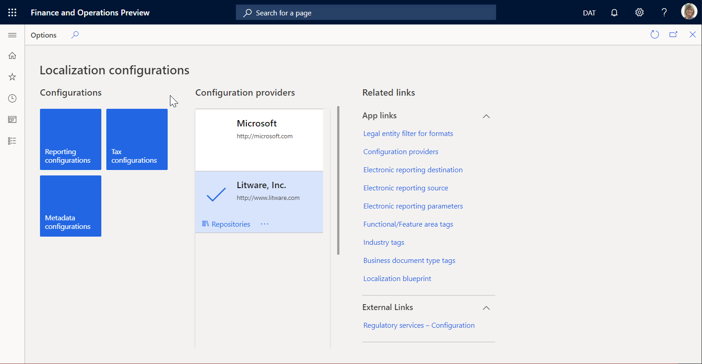
Importieren von ER-Lösungen
Im Beispiel dieses Verfahrens werden exemplarische ER-Konfigurationen verwendet. Sie müssen in Ihre aktuelle Instanz von Dynamics 365 Finance die ER-Konfigurationen importieren, die die Geschäftsdokumentvorlagen enthalten, die mit der Business-Dokumentenverwaltung bearbeitet werden können. Laden Sie die folgenden Dateien herunter und speichern Sie sie dann lokal, um diesen Vorgang abzuschließen.
ER-Beispiel-Debitorenrechnungsstellungslösung
| Datei | Inhalt |
|---|---|
| Customer invoicing model.version.2.xml | ER-Datenmodell-Konfiguration |
| Customer FTI report (GER).version.2.3.xml | ER-Formatkonfiguration für die Freitextrechnung |
ER-Beispiel-Zahlungsschecklösung
| Datei | Inhalt |
|---|---|
| Model for cheques.version.10.xml | ER-Datenmodell-Konfiguration |
| Cheques printing format.version.10.9.xml | ER-Formatkonfiguration für Zahlungsscheck |
ER-Beispiel-Außenhandelslösung
| Datei | Inhalt |
|---|---|
| Intrastat model.version.1.xml | ER-Datenmodell-Konfiguration |
| Intrastat report.version.1.9.xml | ER-Formatkonfiguration für Intrastat-Kontrollbericht |
Gehen Sie folgendermaßen vor, um die jeweiligen Dateien zu importieren. Importieren Sie die ER-Datenmodell-Konfiguration jeder ER-Lösung in den Tabellen oben, bevor Sie die entsprechende ER-Format-Konfiguration importieren.
- Öffnen Sie die Seite Organisationsverwaltung > Elektronische Berichterstellung > Konfigurationen.
- Wählen Sie oben auf der Seite Austausch aus.
- Wählen Sie Aus XML-Datei laden aus.
- Wählen Sie Durchsuchen aus, um die erforderliche XML-Datei zu laden.
- Wählen Sie OK, um den Import der Konfiguration zu bestätigen.
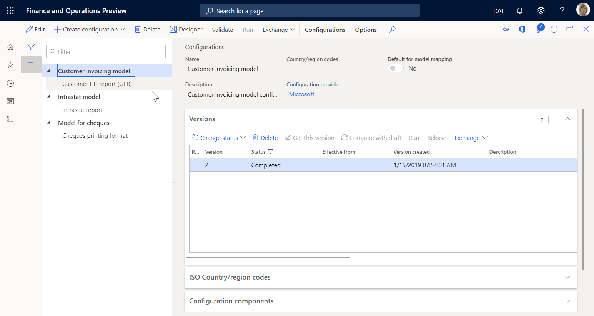
Alternativ können Sie die offiziell veröffentlichten ER-Formatkonfigurationen aus dem Microsoft Dynamics Lifecycle Service (LCS) importieren. Um diesen Vorgang abzuschließen, können Sie beispielsweise die neueste Version der Freitextrechnung (Excel) ER-Format-Konfiguration importieren. Die entsprechenden ER-Datenmodell- und ER-Modellzuordnungskonfigurationen werden automatisch importiert.
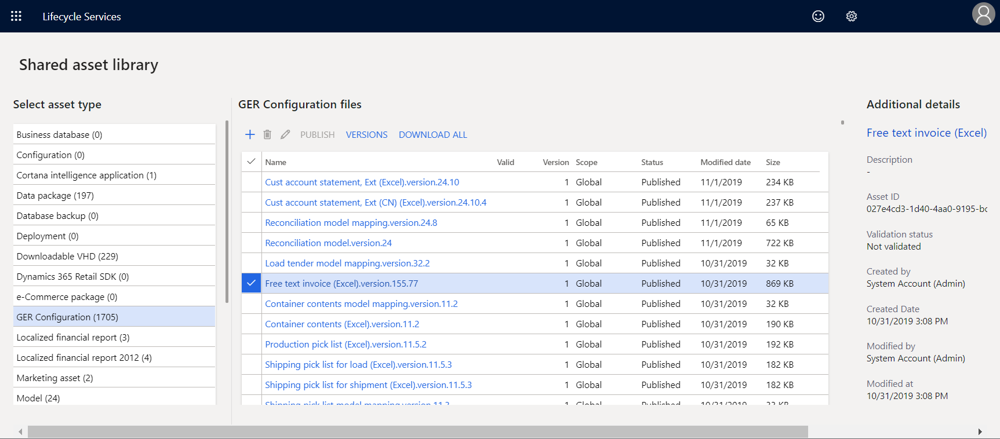
Weitere Informationen zum Importieren von ER-Konfigurationen finden Sie unter Verwalten des ER-Konfigurationslebenszyklus.
Aktivieren der Geschäftsdokumentverwaltung
Um die Geschäftsdokumentverwaltung zu starten, müssen Sie den Arbeitsbereich Funktionsverwaltung öffnen und die Funktion Geschäftsdokumentverwaltung aktivieren.
Gehen Sie folgendermaßen vor, um die Geschäftsdokument-Verwaltungsfunktionen für alle juristischen Personen zu aktivieren.
- Öffnen Sie den Arbeitsbereich Funktionsverwaltung.
- Wählen Sie auf der Registerkarte Neu die Funktion Geschäftsdokumentverwaltung in der Liste aus.
- Wählen Sie Jetzt aktivieren aus, um die ausgewählte Fähigkeit zu aktivieren.
- Aktualisieren Sie die Seite, um auf die neue Funktion zugreifen können.
Note
Weitere Informationen zur Verwendung der neuen Dokumentbenutzeroberfläche in der Geschäftsdokumentverwaltung finden Sie unter Neue Benutzeroberfläche für Dokumente in der Geschäftsdokumentenverwaltung.
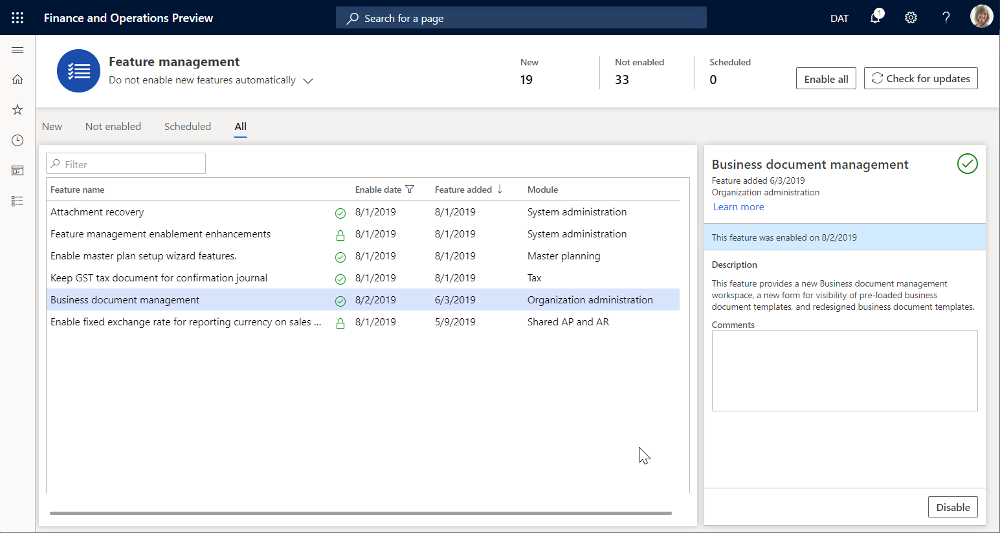
Weitere Informationen zur Aktivierung neuer Funktionen finden Sie unter Funktionsverwaltungsüberblick.
Parameter konfigurieren
Verwenden Sie die Informationen in den folgenden Abschnitten, um die grundlegenden Parameter für die Geschäftsdokumentverwaltung einzurichten.
Voraussetzungen für die Parametereinstellung
Bevor Sie die Geschäftsdokumentverwaltung einrichten können, müssen Sie den erforderlichen Dokumenttyp im Dokumentverwaltungsframework einrichten. Dieser Dokumenttyp wird verwendet, um einen temporären Speicher von Dokumenten in Office-Formaten anzugeben (Excel und Word), die als Vorlagen für ER-Berichte verwendet werden. Die Vorlage des temporären Speichers kann bearbeitet werden, indem die Office-Desktopanwendungen verwendet werden.
Für diesen Dokumenttyp müssen die folgenden Attributwerte ausgewählt werden.
| Attributname | Attributwert |
|---|---|
| Klasse | Datei zuordnen |
| Gruppieren | Datei |
| Ort | SharePoint |
Informationen dazu, wie Sie die erforderlichen Dokumentverwaltungsparameter und Dokumenttypen einrichten, finden Sie unter Konfigurieren der Dokumentverwaltung (This is an external link).
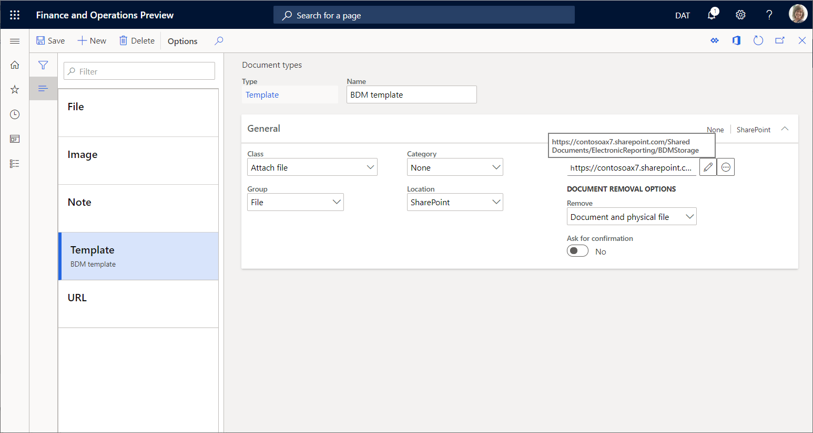
Einrichten von Parametern
Die grundlegenden Geschäftsdokument-Verwaltungsparameter können auf der Seite Geschäftsdokumentparameter eingerichtet werden. Nur bestimmte Benutzer können auf die Seite zugreifen. Hierzu sind die folgenden Schritte erforderlich:
- Benutzer, die der Rolle Systemadministrator zugewiesen sind.
- Benutzer, die einer Rolle zugewiesen sind, die konfiguriert ist, um die Berechtigungen Geschäftsdokument-Verwaltungsparameter verwalten ( AOT-Name ERBDMaintainParameters) auszuführen.
Gehen Sie folgendermaßen vor, um die grundlegenden Parameter für alle juristischen Personen einzurichten.
- Melden Sie sich als Benutzer mit Zugriff auf die Seite Geschäftsdokumentparameter an.
- Gehen Sie zu Organisationsverwaltung > Elektronische Berichterstellung > Geschäftsdokumentverwaltung > Geschäftsdokumentparameter.
- Auf der Seite Geschäftsdokumentparameter auf der Registerkarte Anhänge im Feld SharePoint-Dokumenttyp definieren Sie den Dokumenttyp, der verwendet werden soll, um Vorlagen in Office-Formaten vorübergehend zu speichern, während sie mithilfe der Office-Desktop-Anwendungen bearbeitet werden.
Note
Nur Dokumenttypen, die mithilfe eines SharePoint-Speicherorts konfiguriert werden, sind Sie für diesen Parameter verfügbar.
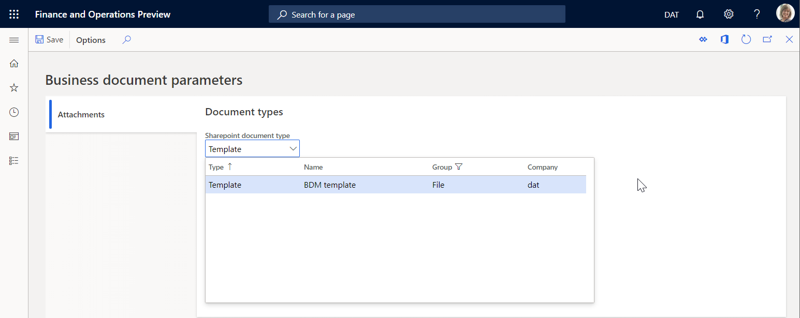
Der ausgewählte Dokumenttyp ist firmenspezifisch und wird verwendet, wenn der Benutzer mit Geschäftsdokumentverwaltung im Unternehmen arbeitet, für das der ausgewählte Dokumenttyp konfiguriert ist. Wenn der Benutzer mit Geschäftsdokumentverwaltung in einem anderen Unternehmen arbeitet, wird der gleiche ausgewählte Dokumenttyp verwendet, sofern keiner für dieses Unternehmen konfiguriert ist. Wenn ein Dokumenttyp konfiguriert wurde, wird dieser anstelle von dem im Feld SharePoint-Dokumenttyp ausgewählten verwendet.
Note
Der SharePoint-Dokumenttyp-Parameter definiert einen SharePoint-Ordner als temporäreren Speicher für Vorlagen, die mit Microsoft Excel oder Word bearbeitet werden können. Sie müssen diesen Parameter einrichten, wenn Sie diese Office-Desktopanwendungen zum Bearbeiten von Vorlagen verwenden möchten. Weitere Informationen finden Sie unter Bearbeiten einer Vorlage in der Office-Desktop-Anwendung. Sie können diesen Parameter leer lassen, wenn Sie die Vorlage nur mit den Funktionen von Microsoft 365 ändern möchten. Weitere Informationen finden Sie unter Bearbeiten einer Vorlage in Microsoft 365.
Konfigurieren der Zugriffsberechtigungen
Wenn der Zugriff auf Geschäftsdokument-Verwaltungsberechtigungen nicht aktiviert ist, werden standardmäßig jedem Benutzer mit Zugriff auf den Geschäftsdokument-Verwaltungsarbeitsbereich alle ER-Lösungsvorlagen angezeigt, die verfügbar sind. Der Geschäftsdokument-Verwaltungsarbeitsbereich zeigt nur die Vorlagen an, die sich in den ER-Formatkonfigurationen befinden und mit einer Geschäftsdokumenttyp-Markierung markiert sind.
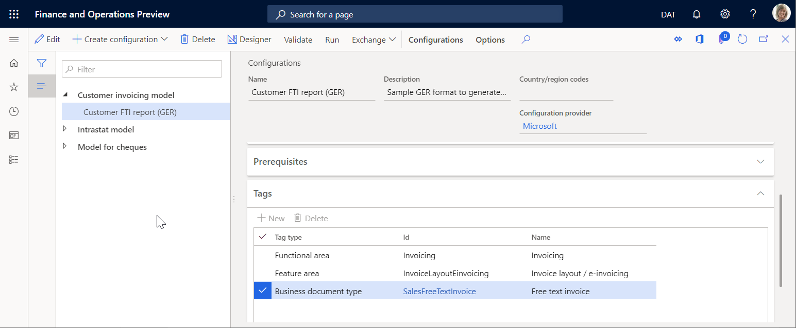
Die Liste der Vorlagen, die im Geschäftsdokument-Verwaltungsarbeitsbereich verfügbar sind, können beschränkt werden, indem Zugriffsberechtigungen konfiguriert werden. Dies ist wichtig, wenn verschiedene Vorlagen verwendet werden, um Geschäftsdokumente für verschiedene Geschäftsbereiche (Funktionsbereiche) zu erstellen, und Sie bestimmten Benutzern Zugriff auf verschiedene Vorlagen zur Bearbeitung im Geschäftsdokument-Verwaltungsarbeitsbereich gewähren möchten.
Geschäftsdokument-Verwaltungszugriffsberechtigungen können im Konfigurator von Zugriffsberechtigungen festgelegt werden. Nur folgende Benutzer können auf die Seite zugreifen:
- Benutzer, die der Rolle Systemadministrator zugewiesen sind.
- Benutzer, die einer Rolle zugewiesen sind, die konfiguriert ist, um die Berechtigungen Berechtigungen für den Zugriff auf Geschäftsdokumentvorlagen zur Bearbeitung konfigurieren (AOT-Name ERBDTemplatesSecurity) auszuführen.
Gehen Sie folgendermaßen vor, um die Geschäftsdokument-Verwaltungszugriffsberechtigungen für alle juristischen Personen einzurichten.
Melden Sie sich als Benutzer mit Zugriff auf die Seite Konfigurator von Zugriffsberechtigungen an.
Gehen Sie zu Organisationsverwaltung > Elektronische Berichterstellung > Geschäftsdokumentverwaltung > Zugriffsberechtigungen verwalten.
Beachten Sie die Benachrichtigung, die Sie darüber informiert, dass die Verwendung von Zugriffsberechtigungen für die Geschäftsdokumentverwaltung derzeit nicht aktiviert ist.
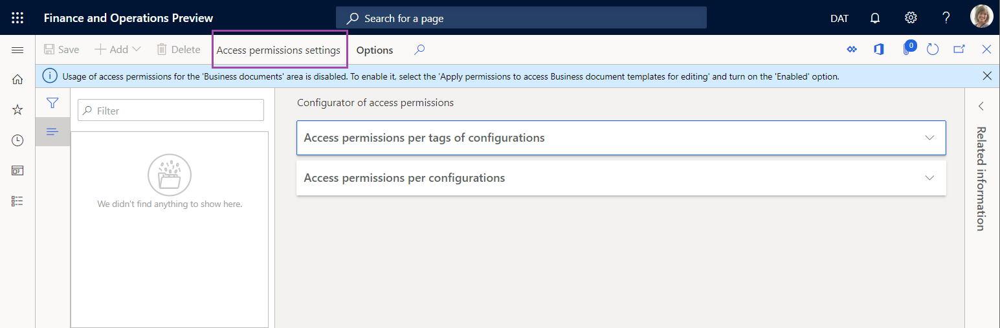
Mit dieser Einstellung kann jeder Benutzer, der einer Sicherheitsrolle zugewiesen ist, die konfiguriert ist, um die Berechtigungen Geschäftsdokumentvorlagen verwalten (AOT-Name ERBDManageTemplates) auszuführen, den Geschäftsdokument-Verwaltungsarbeitsbereich öffnen und eine Vorlage bearbeiten, die verfügbar ist.
In der folgenden Grafik wird gezeigt, was im Geschäftsdokument-Verwaltungsarbeitsbereich für die Benutzer angezeigt wird, die der Rolle Sachbearbeiter Debitorenkonten zugewiesen sind. Mit der aktuellen Zugriffsberechtigungseinstellung kann der Benutzer Geschäftsdokumentvorlagen von verschiedenen Funktionsbereichen bearbeiten, einschließlich Rechnungsstellung, aufsichtsrechtliche Berichtsinformationen und Zahlungen.
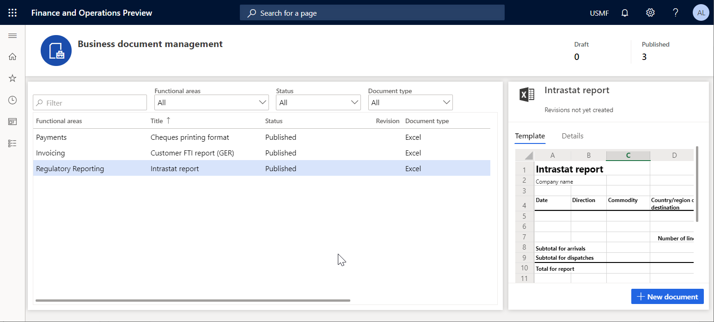
Wählen Sie auf der Seite Konfigurator von Zugriffsberechtigungen Zugriffsberechtigungseinstellung aus.
Aktivieren Sie im Dialogfeld Einstellungen von Zugriffsberechtigungen zur Bearbeitung von Vorlagen die Option Konfigurierte Zugriffsberechtigungen übernehmen.
Wählen Sie OK aus, um zu bestätigen, dass die Geschäftsdokument-Verwaltungszugriffsberechtigungen aktiviert wurden.
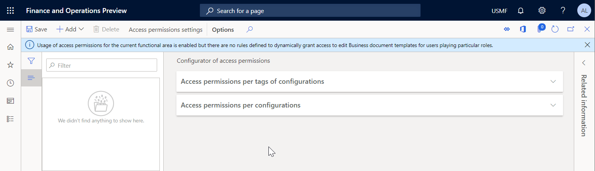
Wählen Sie Hinzufügen aus, um eine neue Geschäftsrolle einzugeben, für die Berechtigungen zum Zugriff auf Geschäftsdokument-Verwaltungsvorlagen konfiguriert werden müssen.
Im Dialogfeld Sicherheitsrollen wählen Sie die Rolle Sachbearbeiter Debitorenkonten aus, und wählen Sie dann OK aus, um die Rollenauswahl zu bestätigen.
Wählen Sie auf der Registerkarte Zugriffsberechtigungen pro Markierungen von Konfigurationen Neu aus.
Wählen Sie im Feld Markierungstyp Funktionsbereich und im Feld Kennung Rechnungsstellung aus.
Wählen Sie Speichern aus, um konfigurierte Zugriffsberechtigungen für die ausgewählte Rolle zu speichern.
Die aktuelle Einstellung bedeutet, dass für einen Benutzer, der der Rolle Sachbearbeiter Debitorenkonten zugewiesen ist und die Berechtigungen Geschäftsdokumentvorlagen verwalten (AOT-Name ERBDManageTemplates) ausführt, ER-Formatkonfigurationsvorlagen, die den Wert Rechnungsstellung für die Funktionsbereich-Markierung aufweisen, im Geschäftsdokument-Verwaltungsarbeitsbereich zur Bearbeitung verfügbar sind.
Schalten Sie den Bereich Zugehörige Informationen von der rechten Seite der aktuellen Seite um. Der Bereich Zugehörige Informationen zeigt an, wie die konfigurierten Zugriffsberechtigungen angewendet werden, u. a. welche ER-Konfigurationsvorlagen für Benutzer verfügbar sind, die der Sachbearbeiter Debitorenkonten zugewiesen sind.
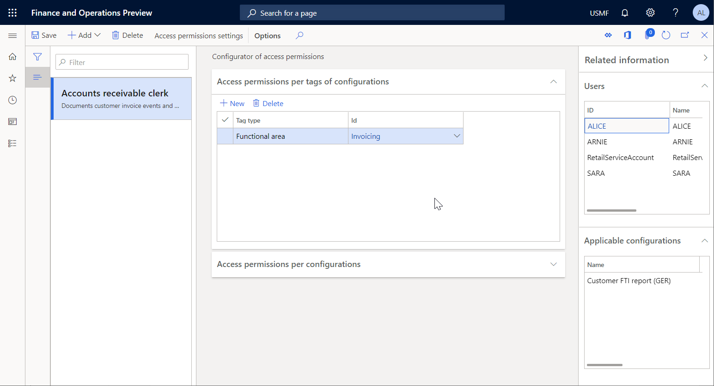
Wählen Sie auf der Registerkarte Zugriffsberechtigungen pro Konfigurationen die Option Hinzufügen aus.
Markieren Sie im Dialogfeld Konfiguration auswählen die ER-Formatkonfiguration Intrastat-Bericht.
Wählen Sie OK aus, um den Eintrag der ausgewählten Konfigurationen zu bestätigen, und dann Speichern aus, um die konfigurierten Zugriffsberechtigungen für die ausgewählte Rolle zu speichern.
Die aktuelle Einstellung bedeutet, dass für einen Benutzer, der der Rolle Sachbearbeiter Debitorenkonten zugewiesen ist und die Berechtigungen Geschäftsdokumentvorlagen verwalten (AOT-Name ERBDManageTemplates) ausführt, die folgenden Vorlagen im Geschäftsdokument-Verwaltungsarbeitsbereich zur Bearbeitung verfügbar sind:
- Vorlagen, die den Wert Rechnungsstellung für die Markierung Funktionsbereich aufweisen.
- Vorlagen aus den ER-Formatkonfigurationen, die auf der Registerkarte Zugriffsberechtigungen pro Konfigurationen aufgeführt sind (Vorlagen der Intrastat-Bericht-Formatkonfiguration der Domäne Offenlegungspflicht in diesem Beispiel).
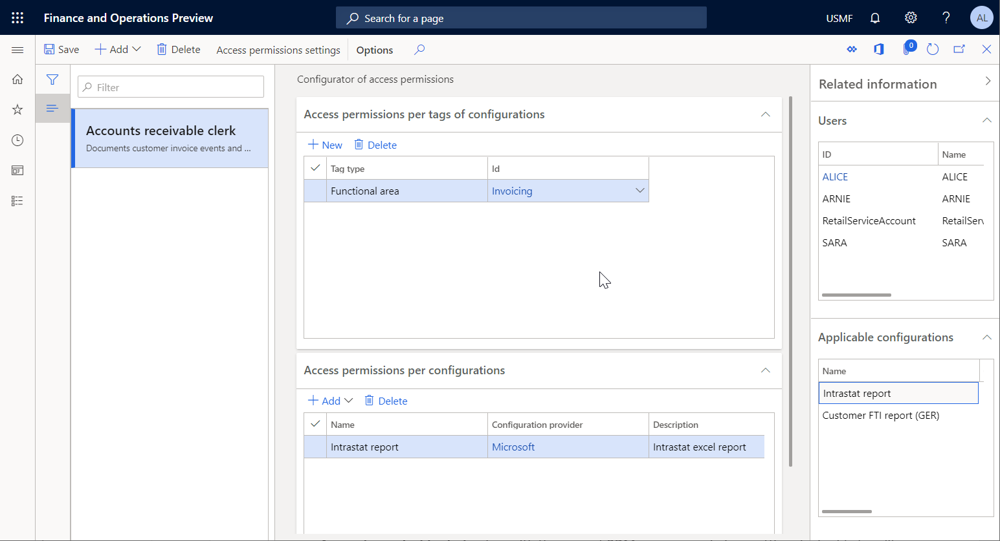
In der folgenden Grafik wird gezeigt, was im Geschäftsdokument-Verwaltungsarbeitsbereich für einen Benutzer verfügbar ist, der der Rolle Sachbearbeiter Debitorenkonten zugewiesen ist. Mit der aktuellen Geschäftsdokumentverwaltungs-Zugriffsberechtigungseinstellung kann der Benutzer Geschäftsdokumentvorlagen der Domäne Rechnungsstellung und der Intrastat-Bericht-ER-Formatkonfiguration bearbeiten. Vorlagen der Zahlungen-Domäne sind nicht für die Rolle Sachbearbeiter Debitorenkonten zugänglich.
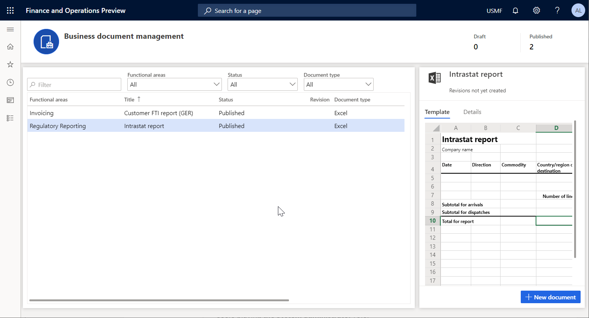
Note
Die Zugriffsberechtigungen pro Konfigurationen-Regeln werden gespeichert, indem die eindeutige Kennung einer ER-Formatkonfiguration verwendet wird. Das bedeutet, dass diese Regeln nicht gelöscht werden, wenn eine ER-Konfiguration, die sich auf diese bezieht, gelöscht wird. Wenn Sie gelöschte Konfigurationen wieder in diese Instanz importieren, beziehen sich diese Regeln erneut auf sie. Sie müssen die Regeln nicht erneut installieren, nachdem die gelöschten Konfigurationen erneut importiert wurden.
Verwenden der Geschäftsdokumentverwaltung zur Bearbeitung von Vorlagen
Geschäftliche Benutzer können auf Geschäftsdokumentvorlagen zur Bearbeitung im Geschäftsdokument-Verwaltungsarbeitsbereich zugreifen. Nur die folgenden Benutzer können auf den Geschäftsdokument-Verwaltungsarbeitsbereich zugreifen:
- Benutzer, die der Rolle Systemadministrator zugewiesen sind.
- Benutzer, die einer Rolle zugewiesen sind, die konfiguriert ist, um die Berechtigungen Geschäftsdokumentvorlagen verwalten (AOT-Name ERBDManageTemplates) auszuführen.
Gehen Sie folgendermaßen vor, um im Geschäftsdokument-Verwaltungsarbeitsbereich Freitext-Rechnungsvorlagen zu bearbeiten. Bevor Sie diese Prozedur ausführen, müssen Sie alle vorhergehenden Verfahren in diesem Thema abgeschlossen haben.
- Melden Sie sich als Benutzer mit Zugriff auf den Geschäftsdokument-Verwaltungsarbeitsbereich an.
- Öffnen Sie den Geschäftsdokument-Verwaltungsarbeitsbereich.
Wenn die Funktion Office-ähnliche Benutzeroberfläche für die Verwaltung von Geschäftsdokumenten im Arbeitsbereich Funktionsverwaltung deaktiviert ist, zeigt der Hauptraster im Arbeitsbereich Verwaltung von Geschäftsdokumenten die folgenden Vorlagen:
- Vorlagen, die Ihrem EB-Konfigurationsanbieter gehören (d.h dem Anbieter, der derzeit als aktiv markiert ist im Arbeitsbereich Elektronische Berichterstattung). Nachdem Sie eine dieser Vorlagen ausgewählt haben, können Sie Vorlage bearbeiten auswählen, um zu beginnen oder die Bearbeitung vorzunehmen.
- Vorlagen, die Eigentum von anderen EB-Konfigurationsanbietern sind. Nachdem Sie eine dieser Vorlagen ausgewählt haben, können Sie Neues Dokument auswählen, um eine Kopie davon zu erstellen, die Ihrem ER-Konfigurationsanbieter gehört. Beginnen Sie dann, die Kopie zu bearbeiten.
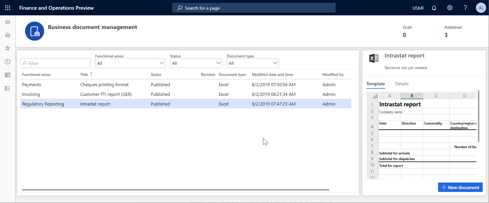
Die Registerkarte Vorlage zeigt den Inhalt der ausgewählten Vorlage. Wählen Sie die Registerkarte Details aus, um Details der ausgewählten Vorlage sowie Details einer ER-Formatkonfiguration dieser Vorlage zu überprüfen. Beachten Sie, dass alle Vorlagen den Status Veröffentlicht aufweisen und keine Details in der Spalte Überarbeitung enthalten. Das bedeutet, dass diese Vorlagen derzeit nicht bearbeitet werden.
Wenn die Funktion Office-ähnliche Benutzeroberfläche für die Verwaltung von Geschäftsdokumenten im Arbeitsbereich Funktionsverwaltung aktiviert ist, zeigt der Hauptraster im Arbeitsbereich Verwaltung von Geschäftsdokumenten die Vorlagen an, die Ihrem EB-Konfigurationsanbieter gehören (d.h dem Anbieter, der derzeit im Arbeitsbereich Elektronische Berichterstattung als aktiv markiert ist). Nachdem Sie eine dieser Vorlagen ausgewählt haben, können Sie Vorlage bearbeiten auswählen, um zu beginnen oder die Bearbeitung vorzunehmen.
Wählen Sie diese Option aus, um mit Vorlagen zu arbeiten, die anderen EB-Konfigurationsanbietern gehören. Wählen Sie Neues Dokument, um eine Kopie der Vorlage zu erstellen, die Ihrem EB-Anbieter gehört. Sie können dann beginnen, die Kopie zu bearbeiten. Weitere Informationen finden Sie unter Neue Benutzerdokumentschnittstelle in der Geschäftsdokumentenverwaltung.
Starten der Bearbeitung von Vorlagen im Besitz Ihres Konfigurationsanbieters
- Im Geschäftsdokument-Verwaltungsarbeitsbereich wählen Sie die Vorlage Scheckdruckformat in der Liste aus.
- Wählen Sie die Registerkarte Details aus.
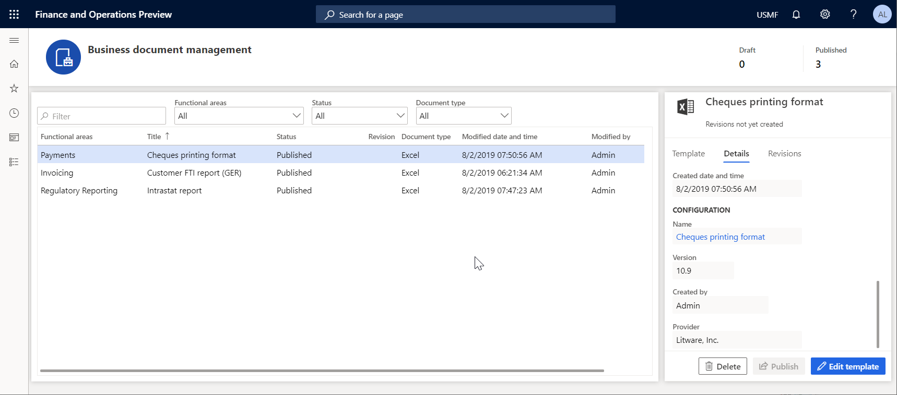
Die Option Vorlage bearbeiten ist für die ausgewählte Vorlage verfügbar. Diese Option ist immer für eine Vorlage in einer ER-Formatkonfiguration verfügbar, die im Besitz des aktiven ER-Konfigurationsanbieters ist (Litware, Inc. in diesem Beispiel). Wenn Vorlage bearbeiten ausgewählt wird, steht die vorhandene Vorlage aus der Entwurfsversion der zugrundeliegenden ER-Formatkonfiguration zur Bearbeitung zur Verfügung.
Starten der Bearbeitung von Vorlagen im Besitz anderer Anbieter
- Wählen Sie im Arbeitsbereich für die Geschäftsdokumentverwaltung das Dokument aus, das Sie als Vorlage verwenden möchten.
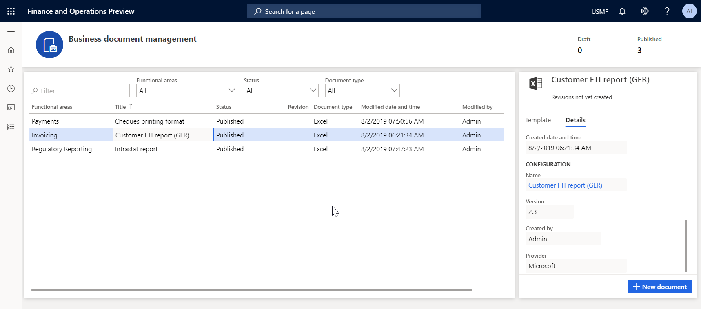
- Wählen Sie Neues Dokument aus und ändern Sie im Feld Titel bei Bedarf den Titel der bearbeitbaren Vorlage. Der Text wird zum Benennen der ER-Formatkonfiguration verwendet, die automatisch erstellt wird. Beachten Sie, dass die Entwurfsversion dieser Konfiguration (Debitoren-FTR-Bericht (GER) – Kopie), die die bearbeitete Vorlage enthält, automatisch markiert wird, um dieses ER-Format für den aktuellen Benutzer auszuführen. Gleichzeitig wird die ursprüngliche nicht-geänderte Vorlage von der Basis-ER-Formatkonfiguration verwendet, um dieses ER-Format für einen anderen Benutzer auszuführen.
- Ändern Sie im Feld Name den Namen der ersten Überarbeitung der bearbeitbaren Vorlage, die automatisch erstellt wird.
- Ändern Sie im Feld Kommentar den Kommentar für die automatisch erstellte Überarbeitung der bearbeitbaren Vorlage.
- Wählen Sie OK, um den Start des Bearbeitungsprozesses zu bestätigen.
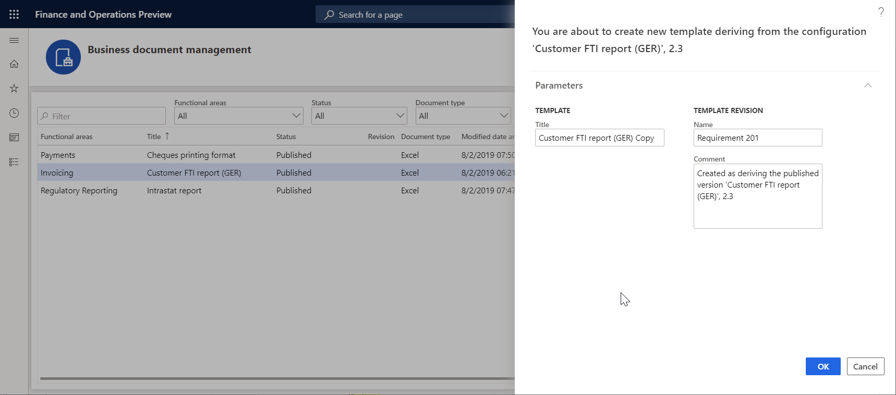
Die Option Neues Dokument ist immer für eine Vorlage in einer ER-Formatkonfiguration verfügbar, die von einem aktuellen oder anderen Anbieter (in diesem Beispiel Microsoft) angeboten wird. Die bearbeitete Vorlage wird dann in einer neuen ER-Formatkonfiguration gespeichert, die automatisch generiert wird.
Mit der Bearbeitung einer Vorlage beginnen
Wählen Sie aus der ausgewählten Vorlage Dokument bearbeiten.
Ändern Sie im Feld Name den Namen der ersten Überarbeitung der bearbeitbaren Vorlage, die automatisch erstellt wird.
Ändern Sie im Feld Kommentar die Anmerkung für die automatisch erstellte Überarbeitung der bearbeitbaren Vorlage.
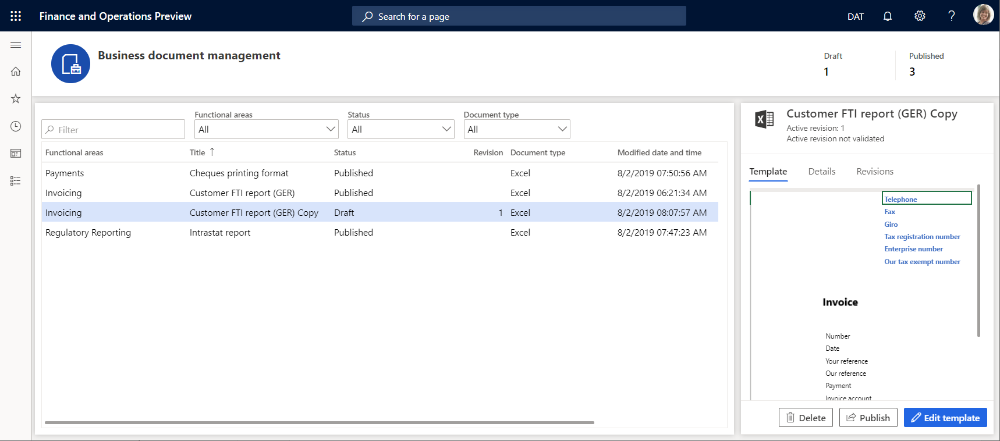
Wählen Sie OK aus, um den Beginn des Bearbeitungsprozesses zu bestätigen.
Die Seite BDM-Vorlagen-Editor wird geöffnet. Die ausgewählte Vorlage ist für die Online-Bearbeitung verfügbar, indem Microsoft 365 verwendet wird.
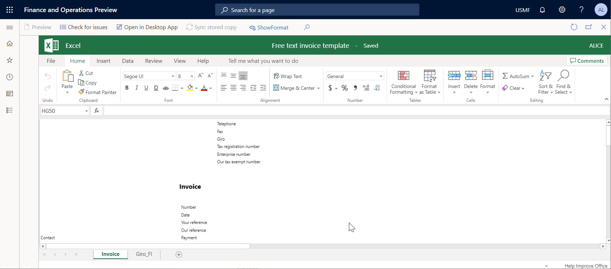
Bearbeiten einer Vorlage in Microsoft 365
Sie können die Vorlage mit Microsoft 365 ändern. Beispielsweise erfolgt in Office Online durch das Ändern der Schriftart des Feldes die Aufforderung im Vorlagenkopf von Regulär zu Fett. Diese Änderungen werden automatisch in der bearbeitbaren Vorlage gespeichert, die im Speicher der primären Vorlage (standardmäßig im Azure-Blob-Speicher) gespeichert ist. Dies ist für das ER-Framework konfiguriert.
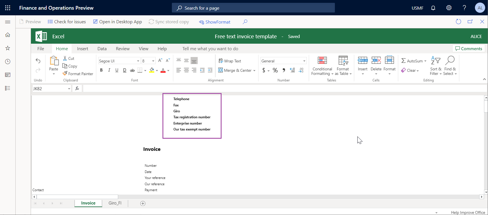
Bearbeiten einer Vorlage in der Office-Desktop-Anwendung
Note
Diese Funktion ist nur verfügbar, wenn der SharePoint-Dokumenttyp-Parameter richtig konfiguriert ist. Weitere Informationen finden Sie unter Konfigurieren von Parametern.
Wählen Sie die Option In der Desktop-App öffnen aus, um die Vorlage zu ändern, indem Sie die Funktion der Office-Desktop-Anwendung verwenden (Excel in diesem Beispiel). Die bearbeitbare Vorlage wird aus dem Festspeicher in den temporären Speicher kopiert, der in den Geschäftsdokument-Verwaltungsparametern als SharePoint-Ordner konfiguriert wird.
Bestätigen Sie, dass die Vorlage aus dem temporären Dateispeicher in der Office-Desktop-Excel-Anwendung geöffnet werden soll.
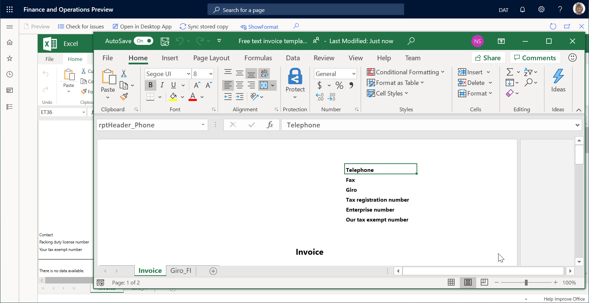
Ändern Sie die Vorlage. Beispielsweise erfolgt durch das Ändern der Schriftart der Felder die Aufforderung im Vorlagenkopf zum Aktualisieren der Farbe von Schwarz zu Blau.
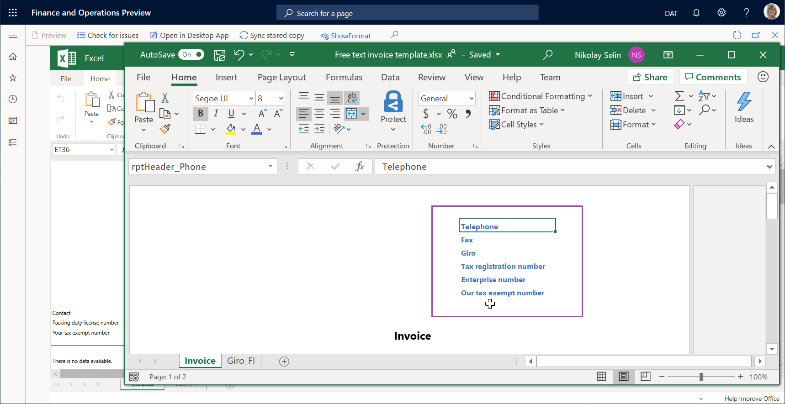
Wählen Sie Speichern in der Excel-Desktop-Anwendung aus, um die Vorlagenänderungen im temporären Speicher zu speichern.
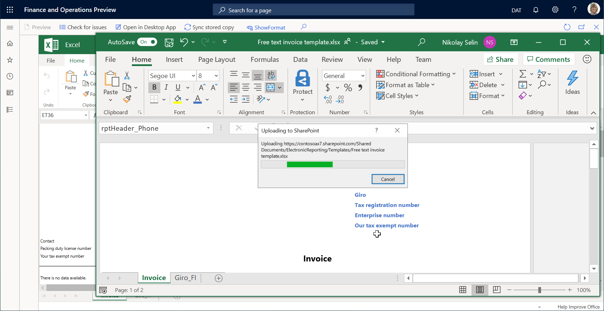
Schließen Sie die Excel-Desktop-Anwendung.
Wählen Sie Gespeicherte Kopie synchronisieren aus, um den temporären Vorlagenspeicher mit dem permanenten Vorlagenspeicher zu synchronisieren.
Note
Die Kopie der bearbeitbaren Vorlage im temporären Dateispeicher wird nur für die aktuelle Sitzung der Vorlagenbearbeitung aufbewahrt. Wenn Sie diese Sitzung beenden, indem Sie die Seite BDM-Vorlagen-Editor schließen, wird diese Kopie gelöscht. Wenn Sie die Vorlage im temporären Dateispeicher angepasst haben und nicht Gespeicherte Kopie synchronisieren ausgewählt haben und versuchen, die Seite BDM-Vorlagen-Editor zu schließen, wird eine Meldung mit der Frage angezeigt, ob Sie eingegebenen Änderungen speichern möchten. Wählen Sie Ja aus, wenn Ihre Änderungen in der Vorlage im permanenten Dateispeicherort gespeichert werden sollen.
Eine Vorlage prüfen
Wählen Sie auf der Seite BDM-Vorlagen-Editor Auf Probleme überprüfen aus, um die geänderte Vorlage im Vergleich mit der zugrundeliegenden ER-Formatkonfiguration zu überprüfen. Folgen Sie den Empfehlungen (sofern vorhanden), um die Vorlage auf die Struktur des Formats von der ER-Basis-Formatkonfiguration auszurichten.
Wählen Sie Format anzeigen aus, um die aktuelle Struktur des Formats von der ER-Basis-Formatkonfiguration anzuzeigen, die auf die bearbeitbare Vorlage ausgerichtet werden muss.
Wählen Sie Format ausblenden aus, um den Bereich zu schließen.
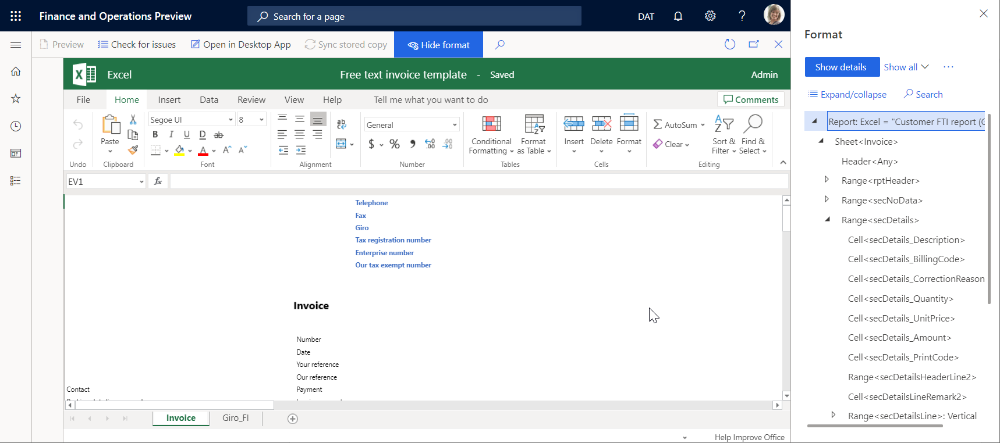
Schließen Sie die Seite BDM-Vorlagen-Editor.
Die aktualisierte Vorlage wird auf der Registerkarte Vorlage angezeigt. Beachten Sie, dass der Status der bearbeiteten Vorlage nun Entwurf lautet und die aktuelle Überarbeitung nicht mehr leer ist. Dies bedeutet, dass der Prozess der Bearbeitung dieser Vorlage gestartet wurde.
Testen der geänderten Vorlage
Wechseln Sie in der Anwendung zum Unternehmen USMF.
Wechseln Sie zu Debitoren > Rechnungen > Alle Freitextrechnungen.
Wählen Sie die Rechnung FTI-00000002 aus, und wählen Sie dann Druckverwaltung aus.
Wählen Sie die Ebene Modul – Debitorenkonten > Dokumente > Freitextrechnung > Originaldokument aus, um den Bereich von Rechnungen für das Verarbeiten anzugeben.
Im Feld Berichtsformat wählen Sie das ER-Format Debitoren-FTR-Bericht (GER) – Kopie für die angegebene Dokumentebene aus.
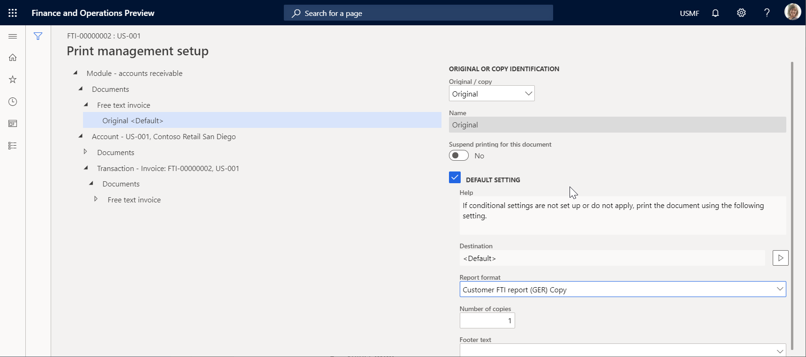
Drücken Sie die Esc-Taste, um die aktuelle Seite zu schließen.
Wählen Sie Drucken aus, und klicken Sie dann auf Ausgewählt.
Laden Sie das Dokument herunter und öffnen Sie es mithilfe der Excel-Desktop-Anwendung.
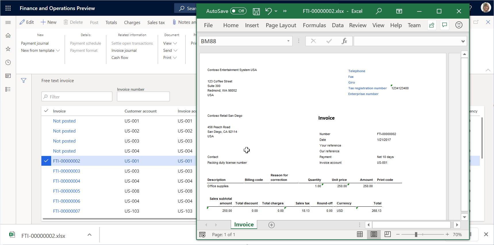
Die geänderte Vorlage wird verwendet, um den Freitextrechnungsbericht für den ausgewählten Artikel zu generieren. Um zu analysieren, wie dieser Bericht von den Änderungen betroffen ist, die Sie für die Vorlage eingegeben haben, können Sie diesen Bericht in einer Anwendungssitzung ausführen, direkt nachdem Sie die Vorlage in einer anderen Anwendungssitzung geändert haben.
Erstellen einer alternativen Vorlagenüberarbeitung
Öffnen Sie die Seite BDM-Vorlagen-Editor, und wählen Sie die Vorlage Debitoren-FTR-Bericht (GER) – Kopie aus.
Auf der Registerkarte Überarbeitungen wählen Sie Neu aus.
Bei Bedarf ändern Sie im Feld Name den Namen der zweiten Überarbeitung, basierend auf der derzeit aktiven ersten Überarbeitung.
Ändern Sie ggf. im Feld Kommentar die Anmerkung für die automatisch erstellte Überarbeitung der bearbeitbaren Vorlage.
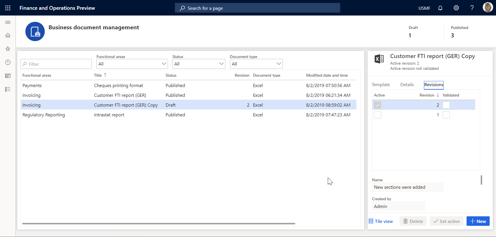
Sie haben eine neue Revision Ihrer Vorlage erstellt, die im Speicher der permanenten Vorlage gespeichert wurde. Jetzt können Sie das Bearbeiten der Vorlage der zweiten Überarbeitung fortsetzen, die derzeit als „aktiv“ ausgewählt ist.
Wählen Sie die erste Überarbeitung und dann Als aktiv festlegen aus. Sie können jederzeit eine andere Überarbeitung als aktiv auswählen, wenn Sie zu dieser Überarbeitung der Vorlage zurückkehren möchten.
Wählen Sie die zweite Überarbeitung und dann Löschen aus.
Wählen Sie OK aus, um zu bestätigen, dass Sie die ausgewählte Überarbeitung löschen möchten. Sie können alle nicht-aktiven Überarbeitungen löschen, wenn Sie sie nicht mehr benötigen.
Löschen einer geänderten Vorlage
- Auf der Seite BDM-Vorlagen-Editor wählen Sie die Registerkarte Vorlage aus.
- Wählen Sei Löschen.
- Wenn Sie OK auswählen, um das Löschen zu bestätigen, wird das ER-Format Debitoren-FTR-Bericht (GER) – Kopie mit der geänderten Vorlage gelöscht. Wählen Sie Abbrechen aus, um andere Optionen zu untersuchen.
Widerrufen von Änderungen der Vorlage
Wenn Sie die Vorlage von einem ER-Format bearbeiten, das dem aktuellen aktiven Anbieter gehört, wird Ihnen die Möglichkeit angeboten, Änderungen zu widerrufen, die für die Vorlage eingegeben werden.
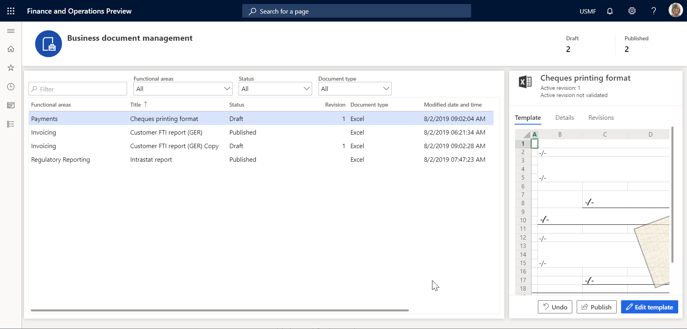
- Auf der Seite BDM-Vorlagen-Editor wählen Sie die Registerkarte Vorlage aus.
- Wählen Sie Rückgängig aus.
- Wenn Sie OK auswählen, um die Änderungen zu widerrufen, die für die Vorlage eingegeben werden, wird die geänderte Vorlage durch die ursprüngliche Vorlage ersetzt und alle Änderungen werden entfernt. Wenn Sie Änderungen der Vorlage widerrufen, sind Sie in der Lage, die Vorlage zu löschen. Wählen Sie Abbrechen aus, um andere Optionen zu untersuchen.
Veröffentlichen einer geänderten Vorlage
- Auf der Seite BDM-Vorlagen-Editor auf der Registerkarte Vorlage wählen Sie Veröffentlichen aus.
- Wenn Sie OK auswählen, um das Veröffentlichen zu bestätigen, wird die Entwurfsversion des abgeleiteten ER-Formats Debitoren-FTR-Bericht (GER) – Kopie mit der geänderten Vorlage als abgeschlossen markiert. Die geänderte Vorlage wird für andere Benutzer verfügbar. Die abgeschlossenen Versionen dieses ER-Formats behalten nur die letzte aktive Überarbeitung der Vorlage bei. Andere Überarbeitungen werden gelöscht. Wählen Sie Abbrechen aus, um andere Optionen zu untersuchen.
Häufig gestellte Fragen
Ich habe Dokument bearbeiten ausgewählt, aber anstatt die Seite BDM-Vorlageneditor in Finance and Operations zu öffnen, wurde ich auf die Microsoft 365-Webseite geleitet.
Dies ist ein bekanntes Problem bei der Microsoft 365-Umleitung. Dies passiert, wenn Sie sich zum ersten Mal bei Microsoft 365 anmelden. Um dieses Problem zu umgehen, wählen Sie die Schaltfläche Zurück Ihres Browsers aus, um zurück zu navigieren.
Ich weiß, wie ich eine Vorlage bearbeite, indem ich Microsoft 365 in der ersten Anwendungssitzung verwende, und wie ich die Vorlage in der zweiten Anwendungssitzung verwende, indem ich die Vorlage anpasse, um zu untersuchen, inwiefern sich meine Änderungen das generierte Geschäftsdokument auswirken. Ist dies mithilfe der Office-Desktop-Anwendung möglich?
Ja. In der ersten Anwendungssitzung wählen Sie In der Desktop-App öffnen aus. Ihre Vorlage wird im temporären Dateispeicher gespeichert und in der Office-Desktop-Anwendung geöffnet. Führen Sie dann die folgenden Schritte aus, um die Vorlagenänderungen im generierten Geschäftsdokument in der Vorschau anzuzeigen:
- Nehmen Sie Änderungen in der Vorlage vor, indem Sie die Office-Desktop-Anwendung verwenden.
- Wählen Sie Speichern in der Office-Desktop-Anwendung aus.
- Auf der Seite BDM-Vorlagen-Editor der ersten Anwendungssitzung wählen Sie Gespeicherte Kopie synchronisieren aus.
- Führen Sie dieses ER-Vorlagenformat in der zweiten Anwendungssitzung aus.
Ich erhalte die Fehlermeldung 'Wert kann nicht null sein. Parametername: externalId', wenn ich Öffnen in Desktop App wähle. Wie kann ich dieses Problem umgehen?
Höchstwahrscheinlich haben Sie sich bei der aktuellen Instanz der App der Azure AD-Domäne angemeldet, die sich von der Azure AD-Domäne unterscheidet, die verwendet wurde, um diese Instanz bereitzustellen. Da der SharePoint-Service, der verwendet wird, um Vorlagen zum Bereitstellen zur Bearbeitung mit Office-Desktop-Anwendungen zu speichern, zur gleichen Domäne gehört, haben Sie keine Berechtigung für den Zugriff auf den SharePoint-Service. Zur Behebung dieses Problems melden Sie sich bei der aktuellen Instanz mithilfe der Anmeldeinformationen eines Benutzers mit der richtigen Azure AD-Domäne an.
Zusätzliche Ressourcen
Überblick über die elektronische Berichterstellung (Electronic reporting, ER)
ER Entwerfen einer Konfiguration für das Generieren von Berichten im OPENXML-Format (November 2016)
EB-Konfigurationen entwerfen, um Berichte im Word-Format zu generieren
Konfigurieren Sie die elektronische Berichterstattung (ER), um Daten in Power BI zu ziehen.